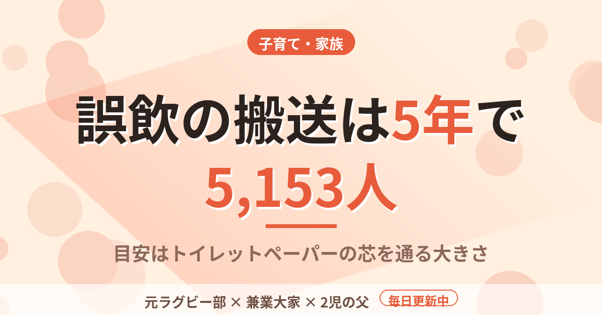
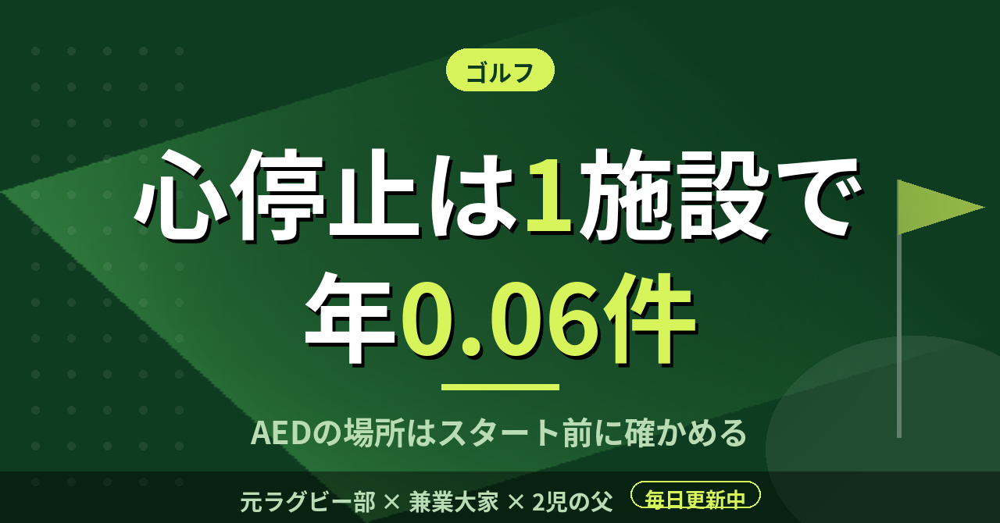

hohemaro15
ラグビー20年、不動産1棟。調べてから書く記録
このサイトについて
小学5年でラグビーを始めて、大学まで20年続けた。大阪の激戦区で6年、同志社大で4年。ポジションはユーティリティバックス。
今はメーカーで設備の電気を担当しながら、兵庫県尼崎市に木造9戸の一棟アパートを運用している。2児の父。
経験談だけで終わらせないために、書く前に必ず制度と統計を調べることにしている。数字が確認できなかった話は書かない。
書いていること
ラグビー
小5から大学まで20年。大阪の激戦区で見たこと、カテゴリが上がるたびに起きたこと。
不動産・資産運用
2016年に検討を始めて2026年に1棟目。判断基準と、断り続けた10年の話。
健康・トレーニング
増量の失敗と成功、サプリで肝臓の数値を悪くした経験、続けている設計。
子育て・家族
2歳と0歳を育てながらの時間の使い方と、資産形成の時間軸。
最近の記事
-
 不動産・資産運用
不動産・資産運用
仲介手数料の上限は家賃1.1か月分。満室8か月の大家が繁忙期の前に広告料を読んだ
1棟目の9戸は、3月31日に引渡しを受けてから一度も空室が出ていない。ありがたい話だが、裏を返せば僕はまだ客付けを一度も経験していない。賃貸の引越しが集中する1月から3月を前に、退去の連絡が来たら誰にいくら払うことになる…
-
 ラグビー
ラグビー
2点差で負けて、2点差で勝った。同志社は勝点18の3位で関西Aリーグ最終節へ
11月22日、たけびしスタジアム京都で、同志社大学が京都産業大学に28-26で勝った。9月に近畿大学に24-26で落とした試合と同じ2点差を、今度は勝つ側で終えたことになる。同志社で4年間プレーした僕は、スコアを見たあと…
-

子育て・家族誤飲と窒息で運ばれた乳幼児は5年で5,153人。2歳と0歳の父が年末の床を見た
年末が近づくと、家の床に小さい物が増える。2歳の上の子のおもちゃは部品が細かくなってきたし、0歳の下の子は動き回って、落ちている物を何でも口に持っていく。この時期に一度、数字を見ておこうと思った。…
-
 不動産・資産運用
不動産・資産運用
火災警報器の交換目安は設置から10年。築10年の9戸を持つ大家が数を数えた
1棟目は2016年3月に建った木造3階建てで、今年で築10年になる。本業では工場の電気設備を担当していて、感知器の点検は毎年のように回ってくる。それなのに、自分の物件の部屋に付いている住宅用火災警報器がいつのものかは、買…
-

ゴルフゴルフ場の心停止は1施設で年0.06件。月1回以上回る僕がAEDの場所を考えた
社会人になってから、ゴルフは最低でも月1回、シーズン中は月2〜3回回ってきた。取引先や会社の人と回ることが多く、朝早くクラブハウスに集まって、昼をはさんで午後まで一緒に過ごす。その間に誰かが倒れたらどうするか。そういう話…
-
 ラグビー
ラグビー
2試合で145失点。9月にフィジーを破った日本代表の秋を、元バックスが数えた
9月19日、秩父宮でラグビー日本代表はフィジーに20対15で勝ち、パシフィック・ネーションズカップを2019年以来に取り返した。前の2大会、決勝で負けていた相手だ。それから2か月で、日本のスコアの並びはまるで違うものにな…